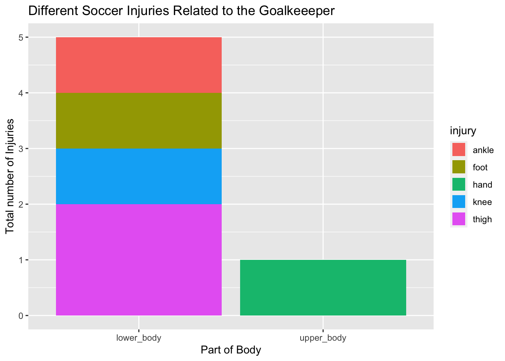
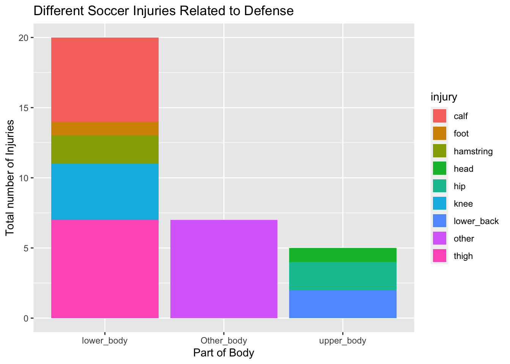
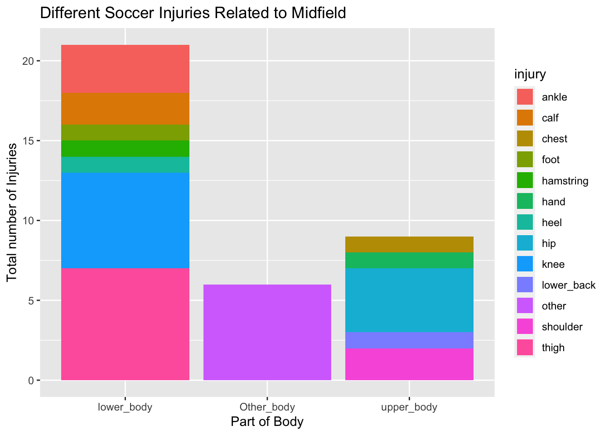
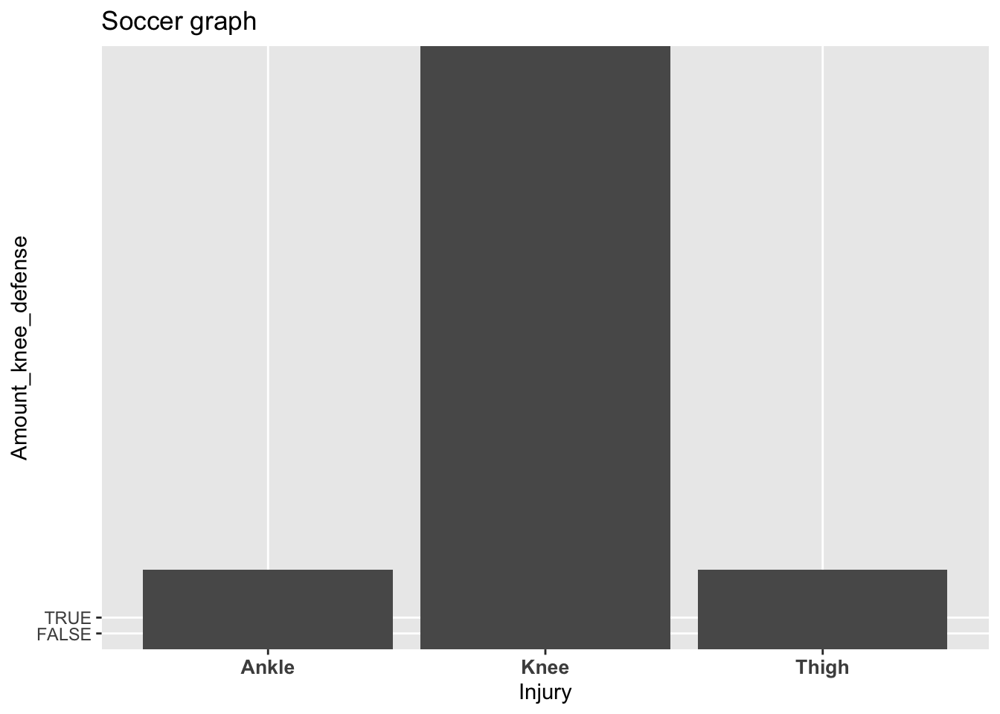

Injuries
Soccer injuries may vary depending on the position. The following data was used with the tidyverse, plotly, and ggplot2 packages. Then, I selected the important data columns to analyze the relationship between position and injuries in the Premier League. This data was originally sourced from Footy Stats. This was then used to visualize positions compared to injuries in an inuitive format that clearly shows the relationship.I found that the most common injuries are lower body and they mostly happen to midfileders
This plot shows all the types of injuries compared position with position at the x axis and injuries at the y axis. Then color coded the dots by their Current Team.
From this plot we see that injuries happen more to Midfielders and Defenders.



